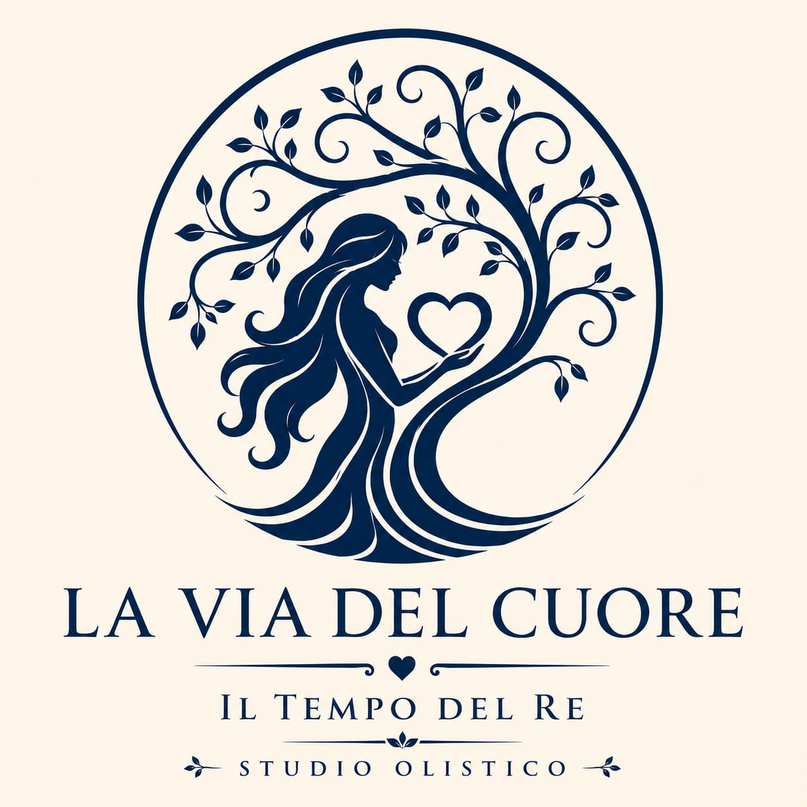
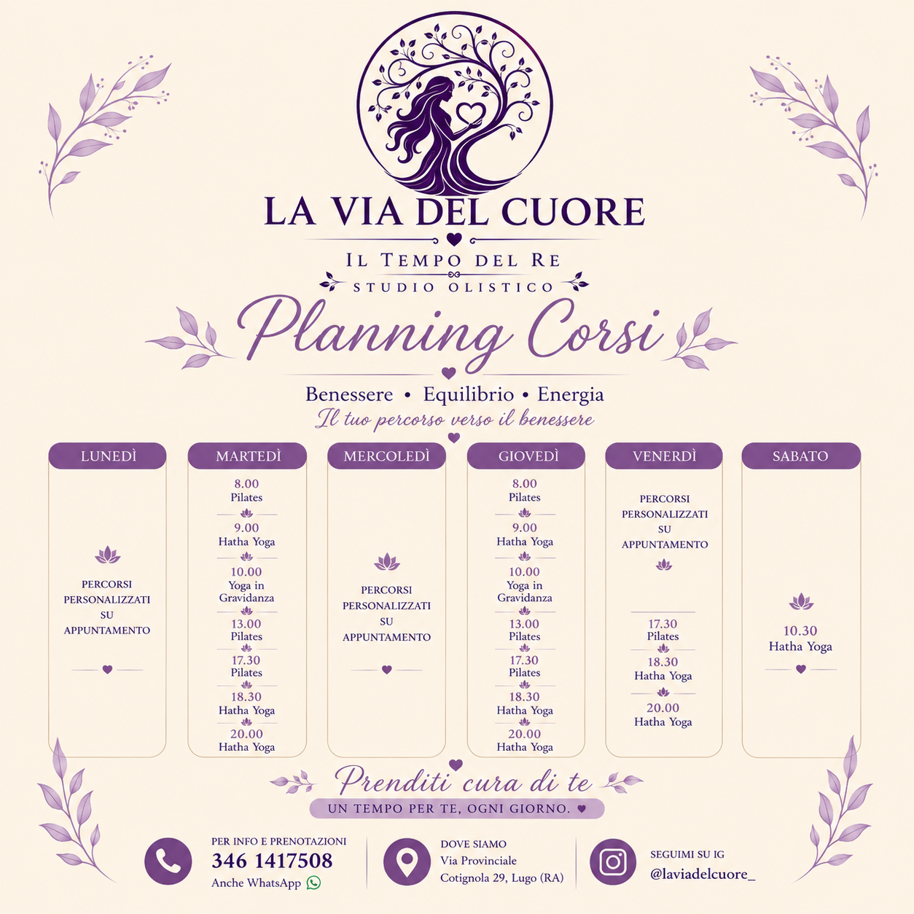

🧘
Corso di Pilates
Una pratica di movimento consapevole che lavora su controllo, postura, respirazione, mobilità e forza, aiutando a sviluppare una maggiore consapevolezza del corpo.

Il tuo percorso verso il benessere. Un tempo per te, ogni giorno.
Spazi e pratiche pensati per dedicare tempo a te, al movimento, all'ascolto e all'equilibrio.
Una pratica di movimento consapevole che lavora su controllo, postura, respirazione, mobilità e forza, aiutando a sviluppare una maggiore consapevolezza del corpo.
Un percorso che unisce asana, respirazione e momenti di ascolto. Una pratica graduale per coltivare presenza, equilibrio e armonia tra corpo e mente.
Una pratica dolce e attenta, pensata per accompagnare il corpo durante la gravidanza attraverso movimento consapevole, respirazione e rilassamento.
Momenti dedicati al riequilibrio e al rilassamento ispirati alla tradizione ayurvedica, con un approccio attento alla persona e alle sue esigenze.
Una pratica di benessere che utilizza stimolazioni mirate del piede e momenti di ascolto corporeo, in un'atmosfera di calma e cura.
Una pratica di benessere che utilizza stimolazioni luminose colorate su specifici punti del corpo, in un percorso personalizzato di ascolto e armonia.
Consulta il planning settimanale e scegli il percorso più adatto a te.

I percorsi personalizzati sono disponibili su appuntamento.
Vieni a trovarci per dedicarti un tempo tutto tuo.
Per informazioni, prenotazioni e percorsi personalizzati contattami direttamente.